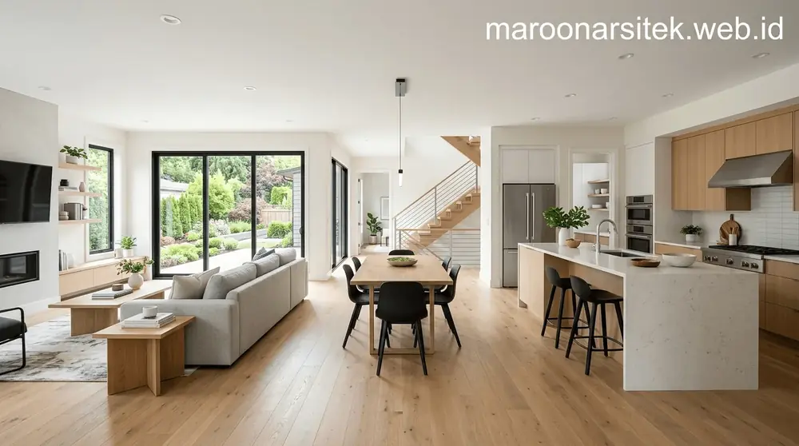
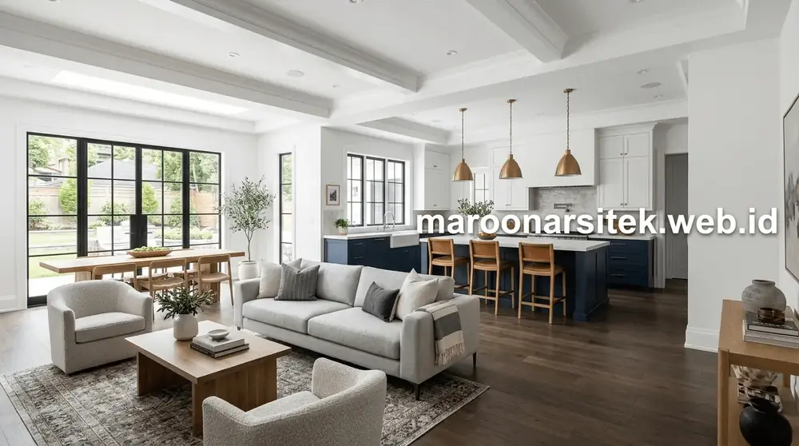
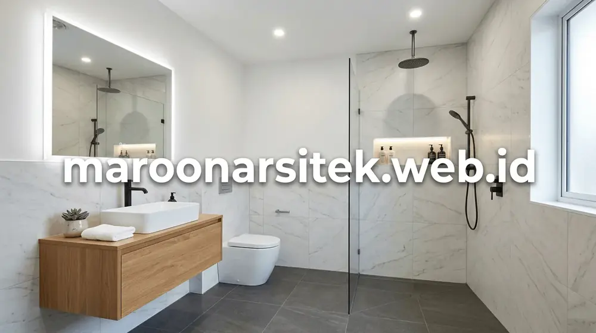
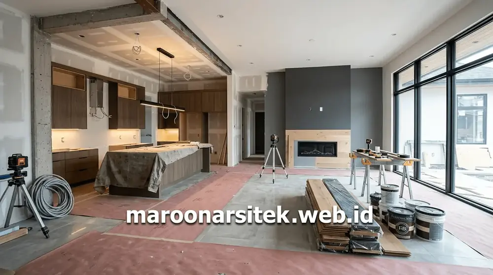

Renovasi Cerdas & Hemat Biaya
Renovasi tanpa perencanaan arsitektur yang matang sering kali membengkak biayanya dan menimbulkan masalah struktur. Maroon Arsitek melakukan analisis struktur eksisting terlebih dahulu untuk memaksimalkan bagian yang masih layak, menghemat biaya renovasi hingga 30%, serta mencegah retak dan kebocoran di masa depan.

Lingkup Pekerjaan Renovasi Kami
Renovasi Total
Perubahan fasad, pembongkaran dinding sekat, peremajaan atap, dan penggantian lantai total.
Penambahan Lantai (Tingkat)
Suntik pondasi cakar ayam, pemasangan balok dak beton, dan perluasan ruang ke lantai atas.
Renovasi Kamar Mandi & Dapur
Instalasi pipa air baru, waterproofing lantai basah, sanitary modern, dan kitchen set custom.
Fasad & Eksterior
Modernisasi fasad rumah lama dengan batu alam, kisi-kisi kayu sintetis, dan kanopi minimalis.
Karya Renovasi Maroon Arsitek



Ingin Renovasi Rumah Lama Menjadi Mewah?
Tim ahli kami siap melakukan survey lokasi langsung ke rumah Anda untuk menganalisis kondisi struktur dan menghitung estimasi biaya renovasi secara transparan.